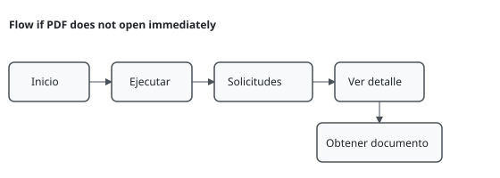
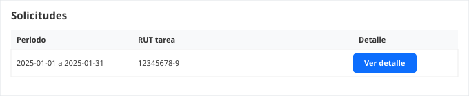
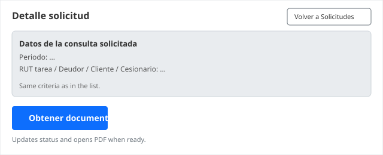

Manual para usuarios que consultan el SII desde el navegador, sin necesidad de conocimientos tecnicos.
Mas abajo encontrara ejemplos visuales: recuadros que imitan la pantalla real (mismas etiquetas y textos que en la aplicacion). Sirven de referencia rapida antes de leer las guias paso a paso.
La aplicacion usa una barra superior oscura con el nombre del sistema y botones claros; el fondo de la pagina es gris muy claro y el contenido importante va en tarjetas blancas. Las acciones principales (por ejemplo Ejecutar, Ingresar) se ven como botones oscuros. La pantalla de ingreso es una tarjeta centrada sobre ese mismo fondo, sin barra de menu hasta que entre al sistema.
Es la pantalla inicial si nadie ha iniciado sesion en ese navegador (o si la sesion caduco). Debe completar los dos campos y pulsar Ingresar; mientras el sistema valida los datos, el boton puede cambiar a Ingresando... y no debe pulsarlo de nuevo hasta que termine.
Titulo Consultas SII, subtitulo Ingreso seguro al sistema, Usuario, Password, boton Ingresar
Ingreso seguro al sistema
Despues de entrar, esta barra se muestra siempre arriba. Principal lleva a consulta de cesiones y certificado masivo; Historial al listado de tramites ya pedidos; Salir cierra la sesion de forma segura. Debajo del menu suele verse el nombre de usuario activo.
Principal, Historial y Salir
Aqui pide al SII un certificado de cesion para un periodo de fechas. Las fechas Desde y Hasta son obligatorias. Los campos de deudor y cliente son opcionales: rellenelos solo si su caso lo requiere. El recuadro de Instrucciones en la app resume el mismo orden de pasos.
Pestaña Certificado de cesion
Revisa que las fechas cubran el periodo que necesitas.
Desde y Hasta marcan el periodo del certificado. Deudor y Cliente son opcionales.
Sirve para comprobar si un folio de un cedente aparece en el libro de facturas cedidas en el periodo elegido. El RUT del cesionario no lo escribe usted: lo aplica el sistema segun la empresa (perfil). Si no hay datos previos guardados, al ejecutar se dispara una consulta al servicio y al final vera el resultado en la misma pagina o un mensaje claro si no hubo coincidencia.
Pestaña Consulta cesiones
El RUT del cesionario de la consulta lo aplica el sistema segun tu perfil; no hace falta ingresarlo.
La busqueda usa el periodo, el RUT del cedente y el folio. Si no hay resultados previos, se hace una consulta nueva con los mismos datos.
Esta vista permite hacer una consulta masiva por cedente, deudor y periodo, revisar un listado paginado y seleccionar varias filas para pedir certificados en una sola accion.
Opcion Principal → Certificado masivo
Busqueda avanzada: folio desde/hasta. El filtro afecta la tabla mostrada en pantalla.
| Sel. | RUT cedente | Nombre cedente | RUT deudor | Folio | Monto cesion | Nº identif. |
|---|---|---|---|---|---|---|
| 76.543.210-K | Comercial Ejemplo SPA | 11.222.333-4 | 154233 | $ 1.250.000 | 983412 | |
| 76.543.210-K | Comercial Ejemplo SPA | 11.222.333-4 | 154240 | $ 980.000 | 983419 |
Esta lista muestra tramites como certificados u otras solicitudes registradas a su nombre. Cada fila resume periodo y RUTs; para ver el estado completo o pedir el PDF debe abrir el detalle con el boton de la ultima columna. Las consultas de cesiones por folio no se gestionan desde esta lista: van en Principal, opcion Consulta cesiones.
Boton Ver detalle por fila
Listado de tus solicitudes de certificados y tramites similares. Las consultas de cesiones las haces desde Principal, opcion Consulta cesiones.
| Periodo | RUT tarea | Deudor | Cliente | Cesionario | Detalle |
|---|---|---|---|---|---|
| 2025-01-01 a 2025-01-31 | 12345678-9 | — | — | — | Ver detalle |
La pagina conecta con los servicios del SII para pedir certificados, consultar cesiones en forma puntual o masiva, y revisar lo ya solicitado para descargar documentos cuando esten listos.
Por seguridad y trazabilidad, cada usuario solo ve sus propias solicitudes. Si necesita otra cuenta o le falta un permiso, debe pedirlo en su organizacion.
Revise estos puntos una vez; le ahorraran mensajes de error o pantallas en blanco al abrir documentos.
Abra la direccion web del sistema. Si no hay sesion activa, vera la pantalla de ingreso (ejemplo arriba en Ejemplos de pantalla). El usuario suele ser el que le entregaron por correo o por su area de sistemas; respete mayusculas y minusculas en usuario y clave.
Si tras un tiempo sin usar la pagina le aparece Token invalido o expirado., no es un fallo grave: cierre sesion si aun puede, y vuelva a entrar con usuario y clave.
Si no puede entrar desde el primer intento: revise mensajes como Credenciales invalidas o Usuario inactivo. Significado y otros textos en Mensajes de referencia.
Use esta guia cuando necesite el documento PDF del certificado para un mes o rango de fechas concreto. El sistema puede intentar abrir el PDF en una pestana nueva en cuanto este listo; si el tramite tarda, el documento quedara asociado a una fila en Solicitudes.

Aqui no descarga un PDF de certificado: obtiene una respuesta en pantalla sobre si el folio buscado figura entre las facturas cedidas en el periodo, segun la configuracion de su empresa. Puede ver varios mensajes de “buscando” o “consultando” mientras el sistema trabaja; no cierre la pestana hasta que termine.
Use este flujo cuando necesite revisar varias cesiones y pedir certificados de varias filas en una sola gestion.
El menu Solicitudes agrupa los tramites que generaron una solicitud registrada (por ejemplo certificados). Puede haber muchas filas: use la busqueda o la paginacion si la aplicacion las ofrece. La tabla resume datos clave; el detalle completo y los botones para documento estan en la pantalla siguiente.
Pulse Ver detalle solo en la fila que le interese. No existe boton de descarga de PDF en esta lista: debe entrar al detalle (guia 5).

El PDF del resultado (cuando exista) se consigue desde la ficha del detalle de la solicitud, no desde la tabla resumida. Esa ficha muestra el estado del tramite y textos de ayuda; lea el bloque Como usar esta pantalla si la aplicacion lo muestra.

La mayoria de incidencias se resuelve comprobando la conexion a internet, permitiendo ventanas emergentes o esperando unos segundos y reintentando la misma accion. Use la tabla como guia rapida; si el mensaje en pantalla es largo o en ingles tecnico, copielo y envielo a soporte con la hora aproximada.
| Situacion | Accion |
|---|---|
| PDF no abre | Compruebe bloqueo de ventanas emergentes; en el detalle pulse otra vez Obtener documento. Pruebe tambien desde otra ventana del navegador. |
| Tramite en proceso | Espere 10–30 segundos: el SII puede tardar en asignar numero de seguimiento. Luego Obtener documento en el detalle. Para tramites de cesiones, puede repetir la consulta en Principal → Consulta cesiones si el mensaje lo indica. |
| Datos incorrectos | Lea el texto rojo o el aviso superior: suele indicar fecha mal escrita, RUT incompleto o campo obligatorio vacio. Corrija y vuelva a Ejecutar o a Ingresar segun corresponda. |
La aplicacion muestra en la parte superior avisos en texto plano: a veces son confirmaciones, a veces errores del servicio. No hace falta memorizarlos; esta lista ayuda a saber si debe esperar, corregir un dato o pedir ayuda. Los ejemplos usan puntos suspensivos donde el sistema completa su usuario o numeros.